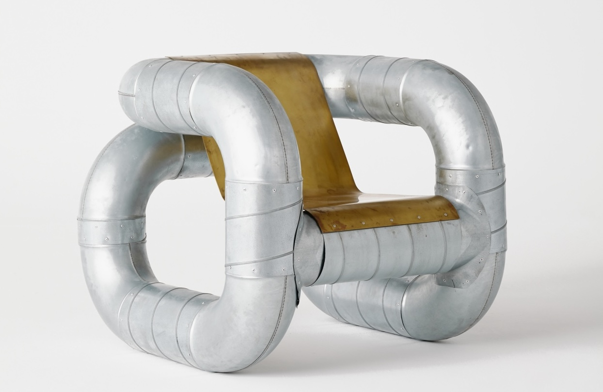

My Chair Warehouse
Objects From Interstitial Space by Lucas Muños Muños


Lucas Muños Muños(1983) is a Spanish designer, artist and craft traveler based in the Netherlands. His practice spins around the functionality and materiality of use-objects, working a field that intertwines the need for use of our daily-life artefacts with the capacity they have to carry and embody meaning from an conceptual and contextual approach.
In this project, he takes materials meant for behind and in between our walls (architectural interstitial spaces) and cross their designed boundaries to make their place in the room.